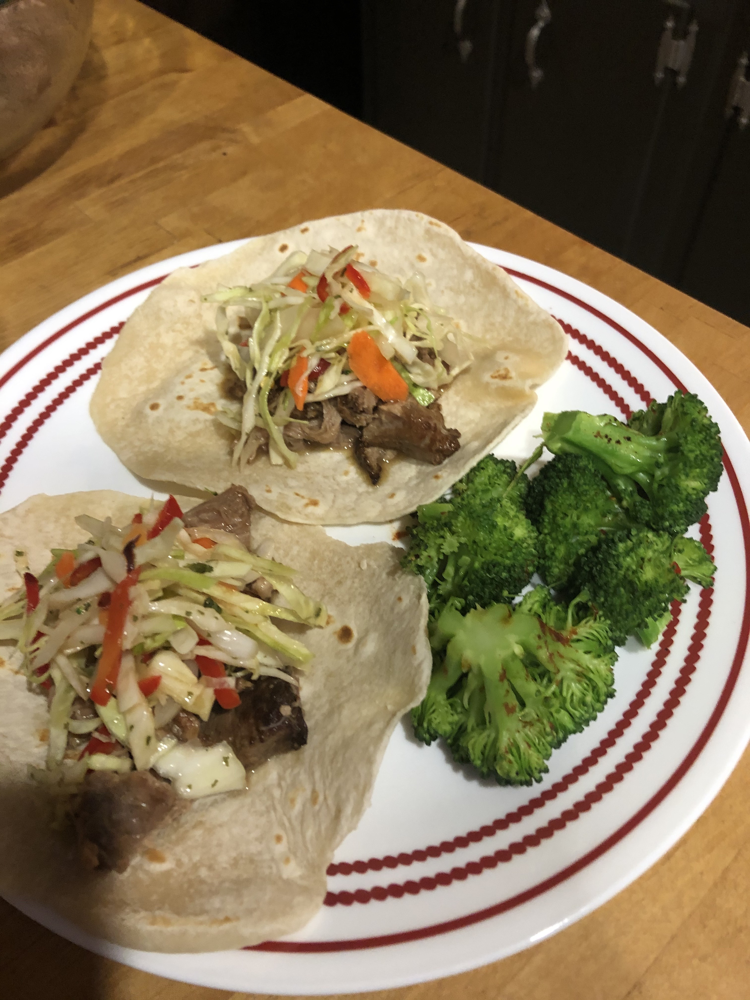
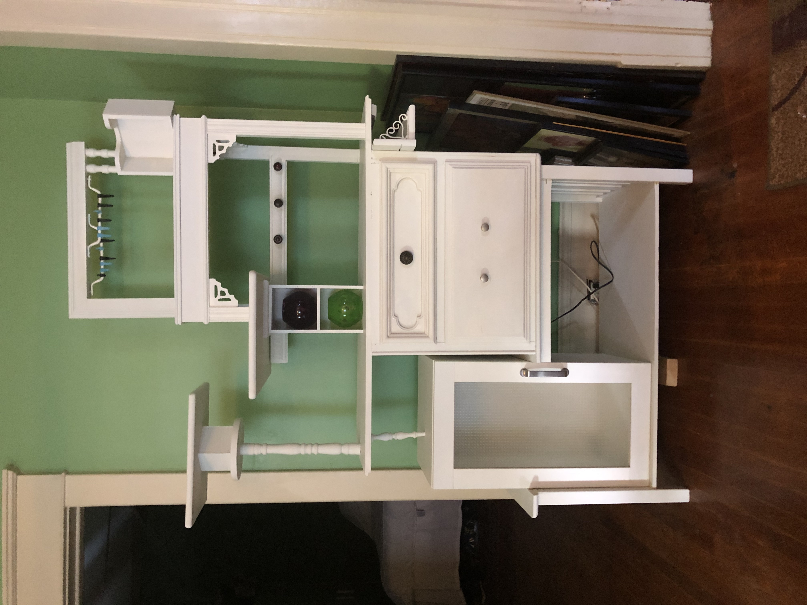
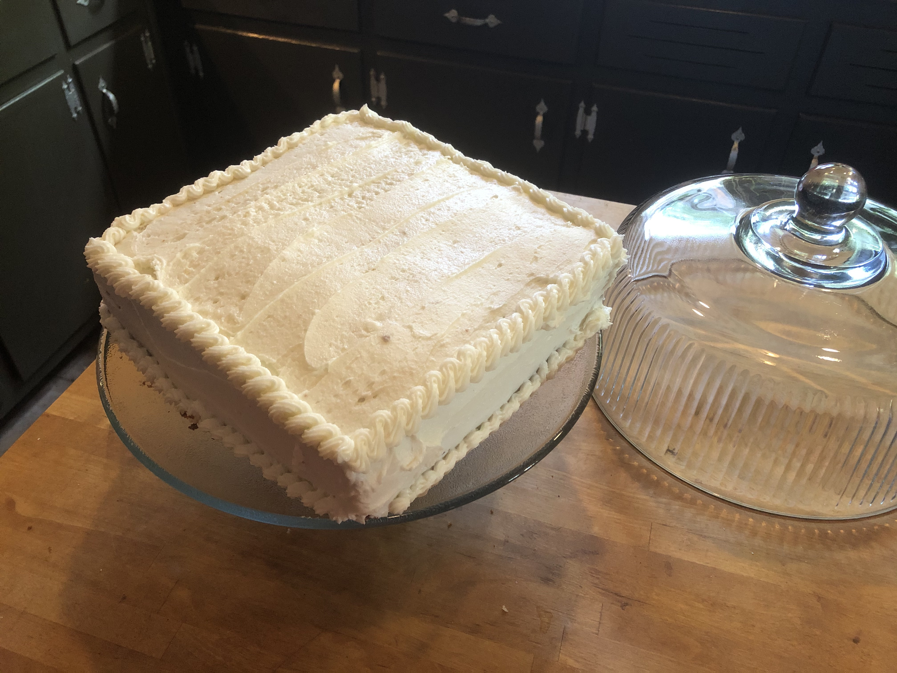
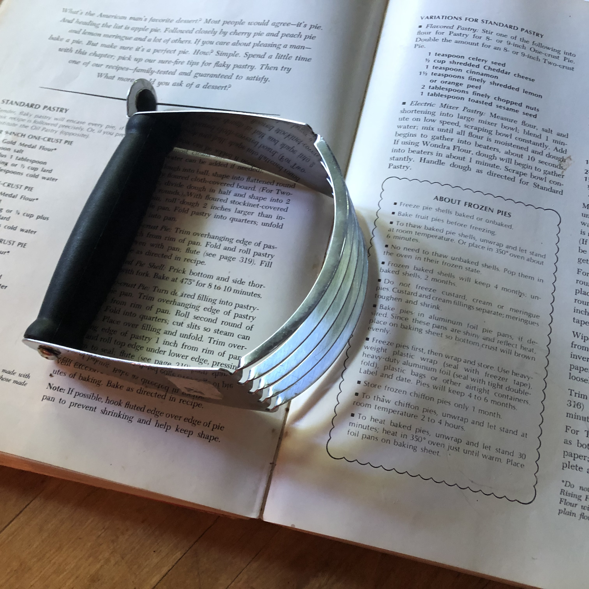

Mama started teaching me to bake when I was 2 years old. With the family business very new, there was little money for end of year gifts
to clients. Mama would start baking and freezing in September. I learned along the way. As a teenager, I started working in restaurant kitchens.
I worked 10 years in the industry, cooking and waiting tables. After college, I made my way back to the family business. For the last 15 years, I
worked six days a week. Which isn't bad. My folks worked seven days a week for decades. Never having been one to give up my social life, the
thing I ended up giving up was cooking. Between work, a rowing obsession, a stricter diet, and lots of workouts, something had to give. There are
only so many hours in the day, unfortunately.
But now there is the Covid19 Pandemic. The world has come to an abrupt halt. My world has come to an abrupt halt. My social life is now on
FaceTime. The river, my rowing friends, and my boat are miles away. My CrossFit workouts are now on Zoom. And my job has all but ended. So
we can sit around and be sad, or try to make the best of things. Husband and I have a huge list of items to do around the house. And I am returning
to my love of cooking and baking. I may have to work out some more to keep up with the calories, but there's time for that too!
Weekends Are For Cooking
I realized a couple weeks ago that everything on our paper kitchen calendar was just crossed out plans of a former life. So I have decided to
put new things on the calendar. There's a family Zoom Happy Hour at 5p on Fridays. Check! Indian Food Extravaganza on Saturday. Check! I am trying
to find a routine in this new reality. It's not easy. So I'm devoting most of the weekends to cooking the more complicated dishes that may take more time.
And I'm filling my calendar with delicious plans!
Mama's Cookbooks
April 5, 2020
I have always loved cookbooks. The descriptions, pictures, and instructions that become such a delicious thing for me to consume. A great cookbook
will allow you to taste the food in your mind. And an awesome cookbook gives detailed instructions, follows standard recipe writing format, and calls
for basic ingredients. (There is nothing worse than a cookbook that calls for a storebought box ingredient instead of its base parts.) But the very
best cookbooks explain so much more about what to do in the kitchen.
1967 Betty Crocker's Cookbook
I remember this book from when I was a kid. This wasn't the book I was allowed to touch. There was a more modern version that had most of the same
recipies. But this one. This is the gold standard. Mama didn't let me borrow this book until I was in my thirites. And even then it was under
threat of mama retaliation. But finally, a few years ago, she gave me this one and my Grandmother's 1963 Good Housekeeping Cookbook. These are two of
my most prized possessions.
Nostalgia
Food is comforting. Our mothers and grandmothers (and fathers as well to be sure) nurtured us with food as we grew up. We associate certain foods
with holidays, birthdays, sicknees, celebrations, and many more factions of our lives. So in this weird time in our world when everything seems uncertain,
I want to comfort myself, my husband, and my neighbors with the foods from my childhood.
I started simple
The first thing I decided to make from the book was Mexican Wedding Cakes. The book gives this as their alternative name. The original name is
Russian Teacakes. I like both names. They are a simple shortbread that is rolled in powdered sugar while still warm. I cut the recipe in half for
this making. I'm trying not to gain too much weight while walking down this memory lane.
All of these recipes are on the Betty Crocker website. I'm checking them to see that they are the same as the book. Find these delicious and
very easy cookies here.
Stir Crazy
April 8, 2020
This is my first full week at home. Last week I still had to work a couple days. And I went out for beer and vodka last Thursday before the full
State of Georgia shutdown went into effect on Friday. My sleep schedule has rotated about 4 hours. For several years now I've been getting up at 5am
to get to the river or CrossFit for early workouts. I'm working out just as much, if not more, now but since it's all at the house, there is no need
to get up so damn early. And I need to work out this much to offset all of these tasty treats!
After the wedding cookies, I dove right into the Betty Crocker cookbook. I bought a 30 pack of eggs to prepare for the quarantine. And then we got
new chickens.
We have 5 beautiful girls who are laying everyday. We are awash in eggs suddenly. So I went big. Betty's Lemon Schaum Torte. Meringue shell,
lemon pudding filling, fresh whipped cream. What's not to love here. I happened to have all of the things needed. And though in reality it only used
three eggs, it felt like a lot. I cannot recommend this one enough. It was not difficult to make though it did take a lot of time. (There was time in
an off oven and an overnight chill that I did not anticipate.) Check out the recipe here.
What a Hootnanny!
I've also been spending some time in one of my favorite subreddits Old Recipes.I found this great post
for Nana's Hootenanny. I can no longer find the post. I'm so happy
I saved this picture. u/harrypottertoots, if you're out there, thank you so much for this recipe. Please let me link to the post. There was a fun discussion
in the comments about what exactly is a "square of butter." The concensus was two tablespoons. Which carved out of a stick is about a cube. This is a soufflé.
Apparently it has a lot of names. Dutch baby. German pancake. Bismarck. And my absolute favorite Pfannkuchen. But it's a soufflé. This is
something I have avoided most of my cooking life believing it would be terribly difficut. It is not. I actually can't believe how easty it was.
Just like the card says. Mix everything together. Put the square of butter in a pan in the oven. When it melts, pour the batter in. Watch delightfully from
outside the oven window as it rises to the point of almost touching the top of the oven! As the commenters pointed
out, this can be sweet or savory since the batter is neutral. I filled ours with mushrooms and onions sauteéd with cured ham and topped that with
this kale gratin recipe.I just used cheddar but, man, it was delicious!
Naan Better
While I was busily prepping our hootenanny, someone lamented on our family WhatsApp that their favorite Indian restaurant had closed. I had takeout from that
place last time I visited there. It was amazing. Sad they are not making it through this chaos. But this gave me the idea of putting things on the calendar.
Tomorrow, I'll get to the Indian feast.
What Day Is It?
April 9, 2020
The days are blending together. Get up. Workout. Paint something. Workout. Cook something. Drink heavily. (Oh, I should apply this resurgence of cooking love
to my drinking as well.) I just heard a friend talking about ashrub and I think
I will try that out tonight. The only things on my calendar are video happy hours with friends and family. This is how I know what day it is. Tonight I
get to see my rowing group. I miss these ladies so much. We have spent years of early mornings on the river together. It is a peaceful way to begin the
workday and I miss it dearly. Excited to actually get to see them all together tonight.
Taco Tuesday
The week leading up to Indian Food Party had other ethnic dinners. I love Mexican food. I go into withdrawls if I don't get a taco every few days.
So I decided to try making my own flour tortillas. To be honest, I much prefer corn tortillas but they are much more complicated. Flour tortillas were pretty
straightforward. And they were good practice for Saturday's naan.
I used this recipe from mexicanplease.com that uses bacon fat instead of oil. Because
pandemic, people. Gotta be frugal these days. There's a jar of bacon fat in my fridge at all times. I just found the best use for it! These tortillas were fantastic!
And while they smelled like bacon (bonus!) there wasn't a bacon-y-ness added to the taste. My tacos still tasted like tacos. We used this heat-and-eat storebought
carnitas I love from Kroger. 10 minutes to tacos. Perfect for busy weeknights. Or when you're feeling lazy during quarantine. I made a quick cabbage slaw with vinegar
and my homemade hot honey for a little kick. Husband loved it.

Naan More Waiting
Friday night I made a cooking plan for Saturday. There are so many parts of Indian cooking that I am not familiar with I figured I needed a game plan. Step one:
My restaurant needed a name. Naan Better. You can find your own Indian restaurant name here.
After that an order of operations. Thaw chicken. (I am known to forget to thaw things.) Make the Indian spice mix Garam Masala. This was an easy mix. I have a serious spice obsession, so I
didn't have to scramble for anything. Recipe here.
Next, make the samosa filing.This recipe is great. It's a bit of work but worth it. Good, easy-to-follow
instructions for the filling and the dough. Made the dough next. I also added a raita
sauce to go with the samosas. I couldn't get any cilantro to make the green sauce you get in takeout. But this creamy cucumber sauce was awesome.
While samosa dough was resting, made the naan dough.
This is the recipe I used. Funny that the one I picked was from Canada, but it worked. well. I did let the yeast bloom a little too long and lost some fluffiness
on the frying. But live and learn.
After the naan and samosas were done, I finally made the Butter Chicken using this Gordon
Ramsey recipe. This was much easier than I thought it would be. And so delicious. Husband was super happy with dinner. Said it tasted like takeout. Karen for the win!
My Naan Better experiment kept me busy for about three hours. After an entire day of painting our porch, I was a nice change. I'm still not done painting the porch. Ugh.
Husband asked for dessert last night. I was sad to respond that we had nothing left. Groceries are being delivered today though. And he asked for another lemon torte.
I started that this morning. My second try looks much better. Pictures tomorrow. Have a great evening!
TGIF, Good Friday!
April 10th, 2020
I'm not a religeous person, but I love a holiday. Grandma said you had to wait until Good Friday to plant in the garden or take the potted plants outside. Here in the South,
Easter is notice that it is really Spring. This is a fairly late Easter so Spring has sprung for the most part. It is a little chilly today. But I've been running in shorts and
tanks for over a week. No complaints.
Friday is Friday. Even in quarantine. I stayed in bed a little longer this morning. Gave myself the day off from the house list. And got busy before my noon workout.
Discovered Betty's Refigerator Cookies. Butterscotch and Vanilla.
Although there are several variations for these cookies. These will be great for the nights when Husband asks, "Do we have any cookies?" This way we don't have to have cookies.
They are easily made. And fresh cookies are the best anyway. The dough can also be frozen. I cut the recipe in half and made the two different flavors. Threw them in the fridge until just a minute ago.
Now I have cookies! Betty's website seems to have altered the original recipe somewhat. This recipe is a bit
of a mix of two of the variatios in the book. The vanilla version used only granulated sugar while the brown sugar version was called butterscotch. Both of these flavors omitted the
cinnamon. Cinnamon had it's own variation. But play around with it. I'm sure they will all turn out wonderfully!
While the cookies were in the fridge, I did my noon workout on zoom. Really nice to see my coach. I go to a small gym. I miss everyone. I miss seeing people...
Anyway. I also did a little bit of work and made a batch of Almond Liqueur and started a batch of Coffee Liqueur. These are two of my go to Christmas gifts. And two of my favorite
liqueurs. I made a special trip to the liquor store before the state shut down to make sure I had Smirnoff 100 proof to make these. Once you make your own, you'll never buy the
name brand stuff again. These are so simple to mix up and you can adjust them to your own taste. The almond liqueur
is ready to drink as soon as it's made. The coffee flavor takes about
a month (but you can start stealing a drink or two after a couple weeks!) You can also substitute brewed coffee for the hot water if you don't have instant coffee. This can also be made decaf.
And yesterday's lemon tarte? Specatacular! It's prettier than the first. Still tastes wonderful. A couple more tries and I won't need the recipe. I do think I lost a little on the
consistency of the meringue in scaling back the sugar. It wasn't enough of a difference in calories to be worth it. Next time I will put the whole amount of sugar in and just do a
few more situps! Family zoom happy hour starts in 5 minutes. Cheers! Have a great evening. Wash your hands and stay inside!
Happy Easter!
April 12, 2020
It's been a quiet, rainy Sunday here in Atlanta. There's lots of family pictures from quarantined Easter celebrations all over. Glad to see some of the cousins still breaking out
the fancy china and silver for the occasion. Things are a little more low key here. Haven't made any decisions about dinner yet. But! In honor of our friend Mr. Easter Bunny, I made
these Rainbow Cake Donuts. These are not in the 1967 book but I've been dying
to try them. And with Sunday's extra time, I actually broke out my Betty Crocker gel colors that have been hiding in the pantry. I love cake donuts. I've never made them and thought they
would have been much more difficult than they were. I used my 3" biscuit cutter and a bottle lid for cutting. They were fast to fry. And even the icing, while a little time consuming, was not
difficult. Find the rainbow icing here.
I had considered dying a couple of eggs this morning. But decided a brightly colored, multiple icing involved donut recipe took place of dyed eggs. But I did make a few
deviled eggs from Betty's book. Boiled fresh eggs can be difficult
to shell. Happily though, deviled eggs leave any divots on the plate side hidden from sight. A few tips from Mom: Flip the eggs over every 12 hours for a day or so before boiling. This will center the
yolks. Put baking soda in the water while boiling. This can help loosen the shells. You can also slide a spoon beneath the shell to loosen it. And last, even if some of the whites aren't perfect,
put them on the plate. It's better to show that you made the effort, even if the finished product isn't perfect. Hope the Bunny was good to you. Have a great evening.
Happy Tuesday, Y'all!
April 14, 2020
Look at me knowing what day it is! I did have to check my watch for the date. Which reminds me. I had planned for several months to do a Last Night on the Titanic
dinner party tonight. I know there are menus from the voyage from first, second, and third class meals. Period costumes. Vintage foods. Does it seem weird to have a dinner party
to commemorate the anniversary of a tragedy? Well let's just hope anyone who has been stuck on a cruise ship this spring is back home safe and healthy by now.
So today I had to take a break from the sweets. We still have lemon torte, cookies, and donuts here. And yesterday I made vegetable broth. We keep a couple of gallon ziplock bags in the
freezer.
Anytime we cut and onion, peel a carrot, or any other vegetable we keep the scraps in the freezer. When they finally get full we make broth. Meat bones are also great
for this! Broth is broth here. I don't need it to be specifically veggie or chicken (unless vegetarians are coming for dinner.) But mostly we mix everything together. This is so
much better than store bought. I don't add salt or spices. There's plenty of flavor there. The extras can be added when you use the broth.
So I spent some time last night with Betty Crocker trying to find a recipe with broth. I freeze plenty of it but wanted to use some right away.
I'm making two things today. Golden Crescents and Avery Island Deviled Shrimp, well Salmon. I haven't been able to get any shrimp lately. But we can make substitutions in
quarantine. Or anytime. It's fine. Try things out! If it doesn't work, order a pizza! No problem.
I'm not 100% about this one, but I'm trusting Betty. The recipe is for shrimp rolled in egg and breadcrumbs and sauteéd in butter. Which sounds just fine. And a Deviled
Shrimp Sauce poured over the shrimp and a bed of rice. The sauce is onion, garlic, butter, chicken broth, with steak sauce, Tabasco, mustard, and lemon juice. This recipe
is not on the web in its original format. Betty doesn't seem to have it on her website at all. So here's the page from the book.
I'll let you know how the salmon turns out tomorrow. I already made the crescents though! They turned out pretty good. They are not the crescent rolls you get out of the
can. But that was not a laminated dough. (The flakey kind with butter layered between the flour.)
I'll be honest and tell you that I made several mistakes in this one. And look! They still look good! My yeast took a long time to work. I used Self-Rising flour for
the first time ever. I don't think I used enough flour. Had some issues rolling it out too. But hey, they will be great with dinner. And I learned things.
Well that's it
for today. I'll see y'all tomorrow with salmon pictures. And maybe more bread. Stay safe!
Quick and Dirty
April 16, 2020
Ok. Real talk, folks. You know how, on occasion, you get really drunk and forget to make dinner? Or eat at all? It's ok. There's no judgment here. This is a safe space.
Well, that's what happened to me after I signed off last time. I forgot that some of those beers are 12%. Oops. They sneak up on you. Anyway, I didn't make that salmon until
last night. And it was delicious. The Avery Island Deviled Sauce is really, really good. It is not, however, really pretty. I will make it again and we will find a way to
make it look prettier. But I did not take a picture of it. It was not worthy. So tasty. So bland looking though. It looked so bland I couldn't believe how good it tasted.
Maybe that's its secret. Hmm.
Today I had to venture into the world. So I have no delicious treats for you. I do have this picture of me in my mask and shaggy hair in need of cutting.
I did clean out a bathroom cabinet and also painted the Furniture Monster (our parlor Frankenstein creation; pictures tomorrow). Marking things off the ever-growing list.
I also got to distantly visit my coach at the gym. She loaned me a barbell and weights. I am exstatic. Tomorrow I can deadlift. And make tasty treats. Life is about
balance, people. So tomorrow I promise something pretty and delicious. Well, I promise pictures of whatever it is, however it turns out. We'll hope for the best.
Right now I am off for a video happy hour with my rowing women. Video chats are making this whole situation bearable. I promise not to forget to eat dinner though.
Until tomorrow, have a fantastic evening! Stay safe. Wash your hands! Make something you've never tried before.
Friday is the Weekend
April 17, 2020
Well hello there! Happy Friday! Just finished our Friday Family Happy Hour. It's really good to see everyone each week. I think this has been good for all of us. And we
seem to be getting better at zoom. With twelve connections and about twenty people each week, that's not alawys easy. But a system of elementary school hand raising has
been implemented thanks to MH. And it's definitely helping.

So how's your day been? I have been very productive. I finished painting the Furniture Monster! And am all but finished going through everything that was in it. There's still a
few random pits strewn about the parlor. But it's almost there. And the Furniture Monster itself looks great! Much less cluttered.
Here's a picture of it empty. It's a bunch of random pieces of furniture we built into one piece several years ago. It looked insane and then we painted it. Looks good, eh?
I got to lift an actual barbell today. It was fantastic. I did not lift much. I am out of practice. But a big thanks to Q4 Crossfit in Hapeville, Ga. So happy to have weights
again. I did my workout and my reward? Is cake!
I made Betty's New Starlight Cake with Vanilla Butter Frosting.
Betty's website does not have this cake listed. I found it here instead. I used half butter and half shortening. It
is not overly yellow. But it is delish! I don't think I have ever made a cake from scratch. I usually get a box when I'm craving cake. This was very simple though.
The instructions
say to beat the batter on low for one minute and high for three minutes. I can say for certain I have never mixed a cake batter that much. The batter was fluffy and much bigger in the bowl.
This must have led to the fluffy texture. It is fantastic. I rember making lots of frosting as a kid. I remember it being a pain. I can tell you that most of the time I use the mixer I got
from Grandma.
But it was in the dishwasher after the cake batter and I used the Kitchenaid for the frosting. This was the smartest thing I did all day. That mixer is made for frosting. My butter was not
soft. I put the paddle attachment on and walked away. Came back. Put in the sugar and walked away again. I'm certain this is why this mixer was invented. Good stuff. And a
good thing. Because I LOVE frosting. It is my weakness. I had to make a second batch to frost the cake. And now I have some frosting in the fridge. I'm the winner.
I baked this in the only cake pan I have. It's square and my cake plate is round. But this is what we are working with. I also haven't frosted a cake since I was 14. I don't have all the
proper tools. But I do have a piping bag. The first line was rough but they got better. I'm feeling proud of myself.
So there you go, folks! One delicious cake frosted and everything! Hope you are safe at home and enjoying a tasty treat or beverage. We haven't decided what to make this weekend. It will
be a surprise. Until then, take good care of yourself and your family. And try something new!

Turkish Inspired Delights
April 21, 2020
Good Tuesday morning to you! You may have noticed that I kind of took the weekend off. I finished painting the porch finally. Things are getting marked off the housework list! Husband made
fresh tortillas and tacos for us Sunday. I am not the only one with some talent in the kitchen. With the weekdays and weekend days blending together, I figured it was okay to rest on Sunday.
Yesterday I made a big grocery run. Hoping we have enough now that I don't have to go back out for a while.
Lamb Chops and Eggplant
Paloma Cocktail
Eggplant on indoor grill
I am excited to tell you about the fabulous dinner we had last night. Sunday night I was looking for a new idea for the eggplant sitting in the fridge. I found this
Turkish inspired recipe on Food and Wine. I had to make a few adjustments for the specialty ingredients. The recipe called for grilled Japanese eggplant. I used the normal Italian eggplant
available at any grocery. I love grilled eggplant. It is one of my favorite things. We have
one of these indoor grill pans. It gets used all the time. It's fantastic for vegetables or my Sunday food prepping of grilled chicken. And last night's dinner was made entirely on it.
The eggplant recipe called for Burrata-that super amazing fresh mozzarella filled with cream. I had some in Italy. It is ridiculously good. But I don't have any here. And that was not on my
quarantine grocery list. I could have just used ricotta but wanted a little more kick to it. So I mixed in some whole milk feta in with my ricotta. It was delightful. Also not in my current pantry
was pomegranate seeds. And I don't really care for them. Love the flavor but don't like the texture. I subbed in some dried cranberries that I poured boiling water over to bring them back to life. I
used dried cilantro instead of fresh, but if you had any fresh herbs (dill, parsley, or basil), I think they would work perfectly. The walnuts and olive oil over the grilled eggplant and cheese are
the real treat here. The textures blend together in that Middle Eastern combination that is less frequently found in our American palette.
Next was the Za'atar Lamb Chops. Za'atar is a Middle Eastern spice blend. There just happened to be some in the pantry that Husband brought back from a trip abroad. But now that I'm out, I'll be
making my own blend from this website. As we saw with the Garam Masala mix, these spices aren't as difficult to mix up as we
might have thought.
I should step back and tell you that I started drining these Vodka Palomas before I started cooking last night. They are delicious. I love fresh grapefruit. Vodka instead of tequila will keep me out of
trouble for the evening. A great drink-vodka (or tequila if you prefer) fresh grapefruit juice, a little lime juice, club soda, and a little salt (on the rim or toss it in on top). But a couple steps may have been missed
in the recipe processes. I forgot to toast the walnuts. They were still great. And the Palomas were worth it. I also forgot to salt the yogurt beforehand.
I just used Greek yogurt. This dish was still amazing. I used a raspberry-balsamic syrup I happen to have instead of pomegranate molasses. See, you can make a Turkish-inspired, lovely dinner with what is in your pantry. You just have to imagine a few substitutes along the way.
Did I forget to mention these Honey Yeast Rolls? I found this recipe yesterday while cleaning out a cabinet. I'm not sure where it came from but will credit the author when I figure it out.
Honey Yeast Rolls
4 cups Bread Flour
1 1/4 cup warm water
1/4 cup honey
3 Tbsp canola or olive oil
1 1/4 tsp salt
1 egg, lightly beaten
2 1/4 tsp (one packet) yeast
Place all ingredients in bread maker on dough setting. Turn out on lightly floured surface.
Knead 30 seconds, rest 10 minutes, covered. Punch down dough. Divide into 12-18 portions. Shape
into balls. Place on greased sheetpans. Cover, let rise 20 minutes. Bake 13 minutes at 400°F.
Brush tops with butter.
These were very easy in the bread maker and then a quick rise as rolls before popping into the oven. The house smelled great last night. Fresh rolls and lamb.
Hoping to get some Moussaka going this week. Feeling like a sweet snack right now. Will go find something tasty to whip up. Details on it next time. Have a great day!
Sweet and Sticky
April 22, 2020
Happy Earth Day! With so many of us staying at home recently, the earth is looking better. I've noticed the stars here in town are brighter. Smog has dissapated all over the world. It'a nice gift
to the earth this year, us giving it a break for a few weeks. So enjoy the clean(er) air today. Take a walk outside with your mask if you're able. I'm enjoying the flowers around the house, a rarity in our shaded lot.
Yesterday I satisfied my sweet tooth with these Carmel Sticky Buns.
These were really fast and tasty! They got a little messy but having sprayed the muffin pan with oil first prevented any sticking. I did have to find a translation
here of Bisquick since I don't keep that on hand. I just realized in linking the recipe that I missed the shortning. That makes more sense now!
I thought my dough was a little stiff. But they are still good. And who would have thought there was shortening in Bisquick?? The brown sugar and butter are melted
in the muffin tins before adding the pecans and then the dough. This makes a crunchy, carmel-y topping on an otherwise not-overly-sweet muffin. It's a great combination
for those not-too-sweet-tooths.
Today, I'm really feeling a savory pie. I picked up a big package of tomatoes this week. They are Georgia grown in a hothouse. So hopefully they are flavorful. I found some
tomato pie recipes on Pinterest this morning. Think that might be dinner tonight. By the way, I'm keeping a Pinterest page of all the recipes I've made during quarantine (
and a few that might be in a future post). Check it out here
Tomato Pie is a Hit!
April 23, 2020
Hey there, fellow quarantiners. How's your Thursday going? I'm doing well, thanks. Slept in a bit this morning so I have that wasted-day-college feeling. It's an odd feeling for me.
I'm not used to this slower pace of life. The overcast day outside is not helping the feeling for sure. But I really can't complain about some extra sleep.
I made Chipped Beef on toast
for breakfast. While it's not the healthiest thing, it is comforting on an dreary morning. Mama made it a lot when I was a kid. I have been making more of those comfort foods in the last month.
I made Mama's Oyster Stew a couple weeks ago. And then a few days ago actually found it in Betty's book. See there, Betty has all the secrets. If you are not a fan of canned meat or fish, this
will probably sound horrible to you. I'm sorry about that. But Mama started making this for me when I was about two years old, and it holds a very warm place in my heart.
Hey, it's Thursday! I get to chat with my rowing ladies this evening. Also, Husband and I have decided to go support our favorite bar and Korean pop-up restaurant tonight. So I'm taking the day off from baking.
Last night's feast was really good so I think it's fair to take the day off.
The tomato pie was definitely a hit. Husband loved it. I had my doubts (mostly about my pie-making abilities) to begin with. There were some issues in making the crust. It's
not something I do on a regular basis, so issues were not unexpected. Once it was in the pie plate, I thought I had it together. The recipe I used
said to prebake the crust. I really like the recipes at TheSouthernLadyCooks.com. They are simple and straight to the point. Thank you for that.
I wanted to take a picture at each step of the process. The crust looked so crazy when I took it out of the oven, I completely forgot. It was puffy on the bottom and the sides
were sliding down. There were serious concerns at this point. But there's always a frozen pizza if all else fails. So we soldier on.
The pie was a layering of firm tomatoes (salted to drain some of the liquid off), onions, and a mix of three cheeses (parmesan, cheddar, and mozzarella were the winners here).
On the top was crumbled, cooked bacon mixed with mayonnaise and more cheese. I know. It doesn't sound good. But be brave. It was delicious. The pie did not come out like ketchup!
The tomatoes had about the same consistency as fried green tomatoes. I would say this recipe would be perfect for those in-between tomatoes of the summer. The ones that are too red
to fry but are never going to ripen correctly off the vine.
I paired the pie with some roasted zucchini, a pan fried piece of salmon, some of those Honey Yeast Rolls from the other night. And another Paloma. I forgot how much
I love fresh grapefruit. I know I said this the other day, but seriously. You have to enjoy the small things right now.
All right, y'all. I'm off. I will think of something tasty for next time. I found a vinegar pie I want to try at some point. And there obviously needs to be more pie so I can get better at crusts.
If you have any thoughts, drop me a line karen(at)23carnies.com. What have you been working on in the
kitchen? Are you making the sourdough breads I've seen pictures of out there? Or something else? Would love to know. Have a wonderful Thursday afternoon!
Socially Distant Visitations
April 27, 2020
Good Monday morning! Yes, if you've lost track, today is Monday. Looking forward to a productive week. We had a great weekend here and actually broke quarantine just a bit for some socially distant
visitations. My bff came to visit me Saturday after four weeks of separate quarantines. It is really weird to see the people you care about and not hug them. I am an especially huggy person anyway. So there
is an abrupt pause as you get to about ten feet away and realize the world is different. But it was so great to see her in person! Yesterday was my mother-in-law's birthday. We had an small, outdoor, stay-back-six-feet
celebration. Again, so great to see people in person. Video chats work wonders for the psyche but seeing people in 3D makes all the difference. We are all trying to figure out how to manage the next many months until
there is a vaccine. I am grateful for beautiful, spring days that allow this socially distant visitation.
So in honor of my mother-in-law's birthday, I decided to make a cake for her. I wanted to make a Hummingbird Cake but was lacking some ingredients. I settled on making two different cakes from Betty's book. It may seem
that I'm trying to be an overachiever by making two, but when things went sideways, it was a blessing to have a backup! Y'all already know this is not a blog about me making perfect food and bragging about it. This
is a blog where we have fun making things and learn many lessons along the way. You should have seen my kitchen!
I made Betty's Banana Nut Cake (This link has a Peanut Butter Frosting that was
not in the book.) I used the Cream Cheese Frosting that was. This link is a slightly different recipe. The book's
recipe was:
I think the addition of butter would have made it more similar to a modern frosting. It probably would have alleviated some of my issues. But hey, that's the fun of cooking from a 50+ year old cookbook!
I also tried Betty's Buttermilk Spice Cake. (This link has a couple nominal differences, the only one of
note is a teaspoon of orange zest where the book had a teaspoon of allspice.) I used the same Cream Cheese Frosting on this cake as well. I need to tell you about this amazingcake pan release recipe
I found on Pinterest. Three ingredients. Fast, simple and worked perfectly! No more grease and flour ordeal. Use it. You won't be disappointed.
So here's what happened. I don't have all the fancy baking tools at my house. I have Grandma's old mixer, probably from the 70's, which I love.
It has decades of experience more than me. I do have a KitchenAid mixer. And while it is the best thing for frostings, I really like the old school one. I told you before I only have the one square cake pan. So when I decided to outsmart
myself making these into layers this weekend, there were side effects. I baked the Banana Nut Cake in a 13.5 x 9.5 x 2 inch
Pyrex baking dish. See how that says baking dish and not cake pan? Yeah, they are apparently different. The cake got very brown very quickly. The cook time was supposed to be 40-45 minutes and it seemed to be
done around 35. I flipped it out of the pan (the pan release is awesome!), and let it cool while I made the spice cake batter. When I came back it was glued to the cooling rack. Glued. I ripped the top off trying to get it
off the rack. It was definitely stodgy. And don't get me wrong, I like cake a little undercooked. But it makes it nearly impossible to frost.
About halfway through the attempt, I called my Mama
for help. To her credit, she did not laugh at me! She informed me that you can't bake in glass baking dishes. This was insight into my pie problems last week. I used a glass pie pan. Apparently metal
is the only way to go in the oven. She told me to toast some walnuts and toss them on the cake to hide the cake filled frosting. While this cake was still not gorgeous, it tastes great!
I learned my lesson here and baked the spice cake in three loaf pans. While not perfect for making layers, they cooked much better! I ended up with a lot of cakes. Which was great! They were easier to share. They were
all delicious and my mother-in-law was really happy to get a cake for her birthday. So let's remember that people are happy for your effort, not the fact that what you made looks like it came from a bakery.
I hope you had a fabulous weekend! Happy Birthday! to those of you with birthdays in this weird time. I hope you are able to have drive-through parties, video chat parties, or other socially distant celebrations. Let's be
extra creative to keep our friends and families safe and still enjoy life's milestones.
Cheeseburger Party
April 29, 2020
Hey, hey, hey! How's it going today? It is a quiet, overcast day here in Atlanta. Big winds and temperatures dropping outside. Looking to be a storm brewing out there. Good thing we are already in our hunker-down mode. I have a helper
on the blog today! This is Analog. She and Digital have both been very needy today.
So yesterday I was craving a burger. And there is nothing like a homemade burger on a homemade bun! I found this Brioche Burger Bun recipe on Pinterest listed as "The Best
Burger Bun." And they were not wrong. These were delicious! Soft and fluffy with the crunch of the sesame seeds on top. Mine got the additional pop from the fact that I only had black sesame seeds. I think they look gorgeous.
The burgers were made from a two to one ratio of ground beef to pork sausage. I added garlic, black and red pepper, an egg and cracker crumbs (because panko is impossible to get these days.) Husband is the Grill Master at our house. Happily I was able to get
charcoal yesterday. I asked him what side he wanted and the reply was chips. After the first bite of the burger, we both said no side was needed at all. They were so good and so filling even at junior-burger size. Bacon, lettuce, tomato, and pickles on
top, and I was stuffed.
I broke out the KitchenAid stand mixer with the dough hook to make the buns. The recipe is easy to follow and gives a nice preface for the need of each ingredient. It's always nice to learn why things are included in a recipe. They were so good,
Husband had leftover burgers for lunch today. There were two buns more than burgers. So I heated up some leftover French Onion Soup and used the bun as the toast. This was perfect as the bun was hearty enough not to break down in the soup right away.
I love homemade French Onion Soup. Remember the broth I made a couple weeks ago? I used that to make the soup. I'm a southern girl and onions are their own food group. Running out of onions is a sin in my house. So a soup where
onions and broth are the stars could only be amazing to me. I know it's supposed to be beef broth. But really, any homemade broth works better than store bought beef broth. One day I will try again to make beef broth.
It wasn't successful when I tried a few years ago.
Brioche Burgers
French Onion Soup
Missy's Boozy Cake
I'd also like to give a shout out to my friend Missy who has taken up the baking reigns this week making this Jack Daniels Honey Whiskey Cake with Boozy Drizzle
she found at Creative-Culinary.com. This birthday cake looks fantastic and combines two of the things y'all know I love: cake and booze! Thanks for sharing, Missy. I look forward to boozy, birthday celebrations again,
even if we all have to be six feet apart.
It's Saturday!
May 2, 2020
Happy Saturday, folks! I can't believe it's May! Even the Canadian family is saying it's Spring. Should be in the 80's here in Atlanta today. And tomorrow. It's almost too pretty to be inside cooking. Well, that's never true, but
we will be enjoying the fruits of our labor outside this weekend for sure. We are trying to find the new normal here lately. Things are beginning to open up again here. And we are figuring how to visit folks and still stay safe. Today Husband and I are going
to visit my rowing partner Dixie and her husband. I haven't see her in person since the beginning of March. I miss her dearly. Yes, we FaceTime and have Zoom chats with the other ladies we row with, but seeing people live and in person is
so completely different. So we are going to their house today to sit outside and be in the same place together. There are still no hugs. This is still really hard for me. But at least we can actually see people now. This is a step.
So y'all know I'm a good Southern girl and I won't go to someone's house without taking something with. So I made Betty's Lemon Squares. I made these
Thursday. They were so delicious I had to get them out of my house before I ate them all! I shared with a few neighbors. I was thinking wistfully of them Friday morning, so I made them again. While they take a little extra
time in the oven (two baking periods) they were really easy to make. The website's recipe has been modernized a touch. It includes zest (I added this to the second batch) and powdered sugar on top. This makes them prettier for sure and hides any errors.
I don't think they need the full 25 minutes on the second bake. I think a couple minutes shy would have worked, but they are gorgeous with a delicate lemon layer texture and crunchy crust. I'm sure Dixie will love them as well.
Tomorrow we are going to visit another couple we miss. It's a big weekend for us! Chris and Summer have a little one about two years old. I was two when I got my first taste of key lime pie. It's an experience that changed my life. Key lime pie is
my absolute favorite dessert. Grandma used to make one for me every time we went to visit. For me it was that seminole thing that Grandma did only for me. No one else got their own pie when the visited. I swear her pie plate took up an entire shelf
in the refrigerator. I remember it being the biggest pies ever. She had a key lime tree in the yard. I can't believe she actually juiced all those tiny little limes to make giant pies for me. I have never made one myself. I do not have the patience for those
limes. But Betty has a Lime Meringue Pie in the book. Mama and I made many Lemon Meringue Pies when I was young. Look at this page out of the book. This is proof of how much this page was used. Also proof that I was a very messy child.
So I am going to make a Lime Meringue Pie tomorrow to take to our friends.
In the interest of getting everything done this weekend, I went ahead and made the crust today. I think I learned a lot in my last pie crust attempt. I've taken Mama's advice and am using a metal pan. I had a selection of pans to choose from. I measured them and they are all
9" plates. I went with the smaller one with the holes in the bottom. I'm not doing a decorative edge so no need for the larger one and I'm hoping the holes make sure it cooks properly. We will find out! The pie crusts in Betty's book
are all shortening. I know butter crusts taste better but they are more difficult to get right. Last time I just traded the same amount of butter for shortening. I checked out this Martha Stewart
recipe and noticed it uses that much butter plus 1.5 Tbsp shortening. So I mixed together these ideas along with a couple tricks Mama has taught me in the past. First, make sure the butter is COLD. I actually cut up the butter
and put it back in the fridge while I gathered everything else. Next, make sure the liquid is ice cold. I put a couple ice cubes in the liquid to make sure. And last, you get a better flavor crust by using juice instead of water. We had some
lemonade here so I tried that. It's only a couple of tablespoons so you won't be able to tell what juice was used, but it gives the crust something extra. I have seen to use vinegar as well for savory pies.
I use a pastry cutter. If you have a food processor, it is probably easier, but I like doing it by hand. And easier to clean up.
So there you go. Finished pie tomorrow. In support of local restaurants, I just did The Burpee Hour challenge. It was awful. Good but awful. 321 burpees. Shout out to Becca Fernandez for making me
do it. My tacos from Lean Draft House tasted even better than normal. Well, I'm off to see people in person! Have a great Saturday! Remember you don't have to do burpees for an hour to patron your
local favorite restaurant. Tip well. Everyone needs a little extra love these days. See y'all tomorrow!
Pie Plate Selection

My Trusty Pastry Cutter
Today's Pie Crust
Getting Back to Life
May 4, 2020
May the Fourth be with you! Hope y'all had a fabulous Monday! Things are beginning to open up here in Georgia. I actually went to work today. I would have been okay to stay home and paint the living room though. Just sayin. But hey, gotta do it sometime.
We had a pretty great weekend though. Dixie loved the Lemon Bars I made. Her husband made chicken wings on the Big Green Egg. We had lots of fun just hanging out by the pool on an awesome spring Saturday. We did not get to see our friends Sunday, however.
Just didn't work out. Means I have a lot of pie at my house!
So let me just start by saying, if you're going to make a pie, have your second cup of coffee first. Betty's Lime Meringue Pie still turned out good, but I failed to read the directions before I threw everything in a bowl. Oops. It was obviously too early
to be making pie without extra coffee. I forgot that the pudding would need to be cooked. And since you don't add the lime juice until after it's cooked, I had to guess at the proper consistency. I came really close. Also, I haven't quite gotten this pastry thing
down yet. My crust looked great! And then I prebaked it. And it sunk into the pan. I'm going to have to do some research on that. No idea what's going on there. But, we will make pie until we get it right! So all y'all just know,
when I come to your house, I'm bringing pie.
This pie tastes so good. It's not key lime and doesn't pretend to be. It was a nice change from lemon meringue. Really tart and perfect lime flavor. I cannot find this recipe on the web. I found
this Classic Lemon Meringue Pie on Betty's website. It is the same Lemon Meringue Pie in the book and the Lime Meringue Pie is just a tiny bit different. Difference for Lime pie is just in the filling (pastry and meringue are the same). Omit the 3 tbsp butter,
do not add the extra tablespoon of cornstarch (just the 1/3 cup), trade lime zest for the lemon zest and only 1/4 cup lime juice instead of the 1/2 cup lemon juice. Both pies in the book have 2 drops of food coloring to make them brighter. I put in the green coloring (it's pretty!)
I really wanted to bake something fun today. Something bread-like. And wrapped around the chicken sausages I had in the fridge. When I came home from work, I did a quick flip through the bread machine book. By the way, check out this bread machine.
My Aunt Mary gave this to me many years ago. It was plain appliance cream colored. We didn't use it much since you had to drag it out of the cabinet every time. A few years ago, we got rid of the microwave to make room for the bread machine. And since it needed
to be cooler to fit in with the other appliances, Husband steam-punked it! I love it! And it is great for making all kinds of dough while you accomplish other tasks.
But I digress. I found a simple pretzel dough in the book and threw everything in. I did check this recipe for cooking instructions. Boiling the dough before going into the oven really made the crust.
I also made Honey Mustard and Beer Cheese dips to go with. I used some pepperjack and a little horseradish in the beer cheese. Tasty!
So there you go! Delicious dinner. I'm going to have to run a lot tomorrow but Husband loved it. Tomorrow I am taking some of this pie to my firend Rachel for her Cinco de Mayo Birthday. Fancy margaritas tomorrow maybe. Will let you know. Hope y'all have a great week!
Moms are the Best
May 7, 2020
Good morning, y'all! It's really early and I'm just drinking coffee. Did a 6am zoom workout with my Crossfit. I'm back to early workouts because I am back to work. At least a little. I will do some work today, but today I get to see my Mama. I haven't seen
her since her birthday at the beginning of March. I won't get to hug her. But I can tell you from having seen a few folks in the last week or so that just seeing people in person, even 6-10 feet away, is awesome. It is a soothing part of our humanity I don't think
many of us were aware of before this. Mother's Day is Sunday. You may not be able to get flowers for this holiday but you better make sure you call your mama. We are having Husband's parents up Sunday. I will have to come up with something special for my
mother-in-law. But as a special pre-Mother's Day treat for my Mama, I made mini Cocount Cream Pies.
I have fond memories of coconut cream pie from my childhood. I don't really remember making them. Maybe I'm getting them mixed up with Coconut Cake. That's totally possible. And that is now on my list of things to make soon. But still. Cocount anything is delicious,
and these pies do not disappoint. I did some recipe mixing here. I initially found Coconut Banana Cream Pie. I need to find a use for the
overripe bananas on my counter. They will probably become protein-boosted, healthy banana bread tomorrow. But I like to look at other ideas out there. I ultimately decided to make the Coconut Cream Pie from the book, but I did use the
Buttermilk Pie Crust from this recipe. That crust is amazing. It's half butter, half shortening with a little powdered sugar and buttermilk as the liquid. Really good flavor and will be in my rotation now.
I got some advice from my neighbor Caitlin about pie crusts the other night. I told her of my issue with the crust sinking into the pan while pre-baking the crust. She told me to let the crust hang over the top of the pie plate so it grips there and doesn't slide.
It seems to work! Now y'all may have noticed by now that I like to do things the hard way. So instead of just making a coconut cream pie, I decided to make mini pies. I used my cute tart pans that never see the light of day. It took me a few tries before I figured how to
keep the pastry overhang without cutting it off. But it did work. There will just be a lot more pastry in my future as I try to make it look better.
The pie is a Vanilla Cream Pie with the Coconut Cream Pie variation. This recipe is not on Betty's site. Maybe it's too simple for the modern palate. But here is the recipe from the book.
Coconut Cream Pie
Makes a 9 inch pie
9-inch baked pie shell
2/3 cup sugar
1/4 cup cornstarch
1/2 teaspoon salt
3 cups milk
4 egg yolks, slightly beaten
2 tablespoons butter, softened
2 teaspoons vanilla
1 cup flaked coconut, divided
Bake pie shell. Stir together sugar, cornstarch and salt in saucepan. Blend milk and egg yolks; gradually stir into sugar mixture. Cook over medium heat, stirring constantly, until mixture thickens and boils. Boil and stir 1 minute. Remove from heat; blend in butter and vanilla. Stir in 3/4 cup
coconut. Immediately pour into baked pie shell; press plastic wrap onto filling. Chill pie thoroughly, at least 2 hours. Top with whipped cream. Sprinkle 1/4 cup coconut over whipped cream.
For Cinco de Mayo we had more homemade tortillas for tacos and my now perfected Spicy Margaritas with our neighbors Travis and Caitlin. I am still loving these tortillas made with bacon fat.
I am getting better at making them I think. This time they were super thin, puffed up beautifully, and made even more than last time. Husband grilled some flank steak and made pico de gallo (super easy: diced tomatoes, chopped onions, cilantro, lime juice, little jalapeño--no recipe
needed.) These really simple tacos were exactly what we needed. And went great with these Spicy Margaritas! I've been making Hot Honey lately. This
is a good article on making your own. It's easy, delicious, and you can make your own spice level. We still have honey from the fall harvest, and this is a good use for it. It goes great on everything: meat, cheese plates, I haven't put it on ice cream yet but that's only because I don't
have any. I'm pretty sure I stole this margarita idea from Travis, so it's good he was here to enjoy them!
Spicy Margaritas
Makes 1 drink
3/4 oz Hot Honey
2 1/4 oz Tequila of choice
Juice of 1 lime
Shake these and strain into a rocks glass with ice. Top with soda water. Garnish with a lime wedge.
I have no pictures of anything from Cinco de Mayo. As it should be. We just enjoyed the evening and the socially distant company. Writing this all out, it's been a better week than I had been feeling. That makes me happy. I'm off for a run before work. Hope you have a fabulous day!
Big Weekend
May 12, 2020
Hey, y'all! Sorry it's taken me a minute to get back here. We had a lot going on this weekend, and I can tell you these 3-4 hour workdays are too much for me right now. Trust me, that seems more crazy to me than it does to you. But it's true. After a month of basically not working at all,
even these short days seem taxing. But enough complaining about work. How was your weekend?
How was your Mother's Day? We had a good time here. My in-laws came up and distantly visited. Ruth told me it was the second time she had left her house in more than a month. The first being two weeks ago
when she came to visit for her birthday. They were in good spirits. And we were all happy for the beautiful day that allowed us to sit out on the porch. It is really good to see family. I had a great time visiting (distantly) my Mama on Thursday. She looked great! I even got to see my Daddy for
a little bit. So grateful for these opportunites.
Y'all, I did a poor job of taking pictures this weekend. You'll have to take my word for the fact that the stuff I made was pretty. I made a great charcuterie board for Sunday. Our oregano, basil, and dill plants have done quite well in the last few weeks (despite the chilly nights) and I was
able to pretty it up with sprigs of herbs. Cheese, crackers, and fruits always look great scattered on a plate; but it really looks classy when you fill in the gaps with fresh herbs.
Saturday I made mini Pumpkin Pies using the recipe in Betty's book. This is the closest recipe I can find on the website. The book called for 3/4 cup of sugar and "1 2/3 cups evaporated milk or
light cream." Not having either, I "made" light cream (half and half basically) from heavy whipping cream and milk. I'm lying here. I have half and half. I need it for coffee. And I need it to be in its correct form when I make my coffee early in the morning. So I'm hording the half and half I have
left. The pie turned out great so it's fine. They did take much longer to bake than I would have thought. They took longer than the time given for a whole pie in the book. Having never before made a pumpkin pie, this could totally have been me. They were probably a little
over baked in the end. But delicious. And you can always just pile on homemade whipped cream to cover any issues.
I used the Buttermilk Pie Crust again. This is my favorite crust now. My go to for sure. I am just about to make another batch
here in a minute. I ate the last of the pie last night. About ten seconds later, Husband said "I'm going to get some pie." Uh, sorry, honey. So I promised him a new pie today.
In the world of fancy drinks, Sunday I found this gem: Earl Grey Tea Cocktail. I have been wanting to try something like this ever since I had
the Lord Grey sour beer at Three Taverns Brewery. This beer has a heavier Earl Grey flavor than this cocktail. I love this beer, but it is definitely a one pint only for me. But the complexities of Earl Grey tea with an alcoholic kick, sweet!
This cocktail calls for gin. I made it with vodka with great results. Everyone loved it and had a second round. It's simple, uses honey syrup for sweetness, and a touch of lemon. The tea I have on hand also has lavender in it. It was not overwhelming, but I think spruced up the drink nicely in the absence of gin.
Last night I finally made my Not Quite Moussaka. It's a healthier version that still tastes fantastic. Y'all know me, I found out about halfway through that the eggplant I purchased was not big enough. No worries, just grilled some sweet potato slices to make the last layers. Traditionally
moussaka is eggplant layered with a ground lamb and tomato mixture, topped with a thick bechemel sauce. I used ground chicken for less fat and I put some ricotta in the bechemel to thicken it up without too much flour. And this version includes sweet potato layers!
 But it was in the dishwasher after the cake batter and I used the Kitchenaid for the frosting. This was the smartest thing I did all day. That mixer is made for frosting. My butter was not
soft. I put the paddle attachment on and walked away. Came back. Put in the sugar and walked away again. I'm certain this is why this mixer was invented. Good stuff. And a
good thing. Because I LOVE frosting. It is my weakness. I had to make a second batch to frost the cake. And now I have some frosting in the fridge. I'm the winner.
But it was in the dishwasher after the cake batter and I used the Kitchenaid for the frosting. This was the smartest thing I did all day. That mixer is made for frosting. My butter was not
soft. I put the paddle attachment on and walked away. Came back. Put in the sugar and walked away again. I'm certain this is why this mixer was invented. Good stuff. And a
good thing. Because I LOVE frosting. It is my weakness. I had to make a second batch to frost the cake. And now I have some frosting in the fridge. I'm the winner.


 I have fond memories of coconut cream pie from my childhood. I don't really remember making them. Maybe I'm getting them mixed up with Coconut Cake. That's totally possible. And that is now on my list of things to make soon. But still. Cocount anything is delicious,
and these pies do not disappoint. I did some recipe mixing here. I initially found
I have fond memories of coconut cream pie from my childhood. I don't really remember making them. Maybe I'm getting them mixed up with Coconut Cake. That's totally possible. And that is now on my list of things to make soon. But still. Cocount anything is delicious,
and these pies do not disappoint. I did some recipe mixing here. I initially found